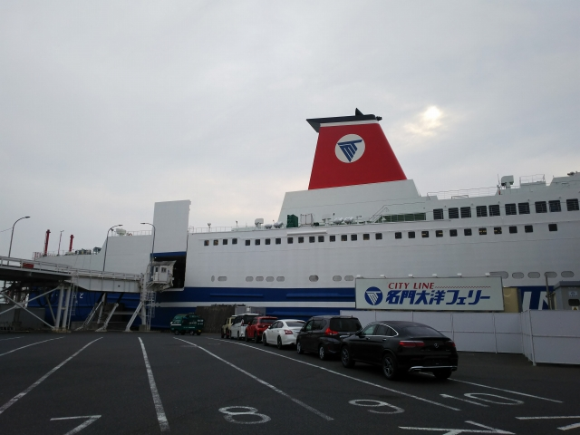
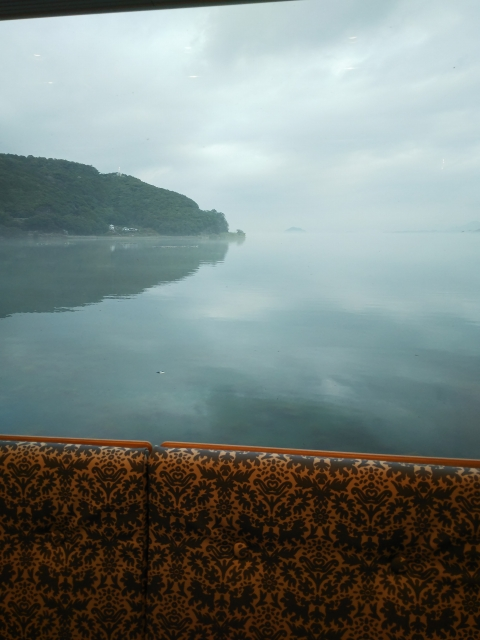
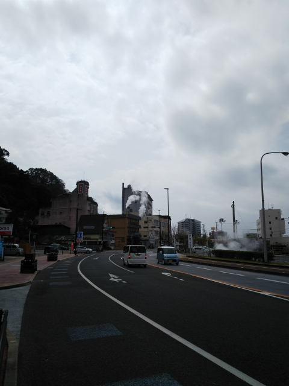
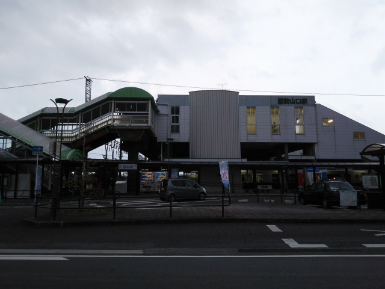

2022（R4） 3月12～14日 小浜温泉・武雄温泉
衝撃の旅として、強く印象に残る旅となりました。な～んそれっ！！！
出発の日、ちょっと野暮用があって、最近できたＪ
ｏｓｈｉｎ宝塚店へ。
ドーンとジオラマがあります。宝塚駅、歌劇場、昆
陽池、大阪空港に降り立つ飛行機、ＨＥＰファイブ
など、てんこもり！
そして、阪急の車内のようなベンチ？もあります。
残念ながら、マスコットレインは置いてヘんかった
っす・・・
いよいよ出発しますが、ちょっと寄り道を。
南千里で降りたって、千里ニュータウン情報館へ。なかなか興味深いイベントが。
開業当時の南千里の駅の写真が飾られていますね。

そして千里線を走った車両の模型が！
右手間にあるのは２１０系やん。岩佐模型さん、頼
んまっせ～
入場無料なのに阪急のクリアファイルがもらえてラ
ッキーでした。
いよいよ大阪南港へ。
今回は、名門大洋フェリーの新造船に乗車します。
やっぱ出来立ては綺麗です。
もう、ごろ寝の大部屋は無くなってます。時代というものの、寂しいかぎりやで。
一番安い、半個室のクラスです。
一番端を取れたので、向かいは壁で超快適です。
記念撮影コーナーは残ってますね。
いよいよ出航。ちょっと寒いですが、やっぱり出航
の時は甲板に出てまいますね。
本当なら、早速船内レストランで夕食でも、となる
のですが、新造船キャンペーンで夕食バイキングが
１０００円になるのは来週から！な～んそれ！！
これだけフェリー愛のある人間が恩恵受けられへん
とは、世の中間違ってるっ！（キレてないっすよ）
１時間ほどすると、明石海峡大橋が見えてきました。
何回もとおってますが、いつも甲板で見てまう光景
です。

無事、新門司港到着です。ちょっと寒かったけど、
良く寝れました。
門司から快速に乗って、博多に到着です。
クロスシート車で良かった～。折尾の駅も完成して
ました。
駅前からバスで国際フェリーターミナルに向かいま
す。
あわてて乗り込んだバスには福岡住みますＳＥさん
が！
乗ったバスは普通のバスやったのに、降りたあとや
って来るバスはおしゃれな連接バスばっかり。
住みますＳＥさん！せっかくやったら連接バスに案
内してよ！
って文句を言ってたら、もらった阪急のクリアファ
イルを
取り上げられてしまいました。とほほ・・・
なんでわざわざ国際フェリーターミナルに来たかと
いうと・・・
見えてきました。博多ポートタワー！
ではなく・・・
クイーンビートルです！
釜山航路用に新造された最新の船です。
悲しいかな、コロナ禍で本来の目的では使われるこ
となく、細々と遊覧ツアーで動いてるみたいです。
わかりにくいですが、珍しい三胴船です。
なかなかおしゃれな船なので、わざわざ乗りにやって来ました。
予想に反してガラガラです。混んでんのも困るけど、
空きすぎもさみしいもんです。
２クラス制で、ここは一般席です。それでも乗り心
地のいいシートです。ワンフロア上がビジネスクラ
スで、一般席の人間は立ち入り禁止でした。
トイレに入ってビックリしましたが、男性トイレも、
いわゆる小便器がない！もう時代についていけない・
・・
おしゃれな「カフェ」で軽食を食べれるというので
期待してたら、ピザとかちらし寿司とかサンドウィ
ッチとか、食べられへんもんばっかりやないかーっ
！！（Ｃおいでやす小田）
なんとかデッキに出るルートを探して外に出ました。
無茶苦茶わかりにくいところに入口があるわ。
デッキはビジネスクラス以外のやつは来るな！っちゅ
う設計なんやろな。せちがらい世の中やで・・・
福岡タワーやドームが見えてますね。
せっかくの高性能の船やのに、全然スピード出さず。
でもあっという間に、折り返し地点の志賀島の沖ま
で来てしまいました。
このあと、おしゃれスポットで近年有名な糸島半島
も見えてきました。住みますＳＥさんに移住を勧め
たら、不動産の値段も上がってるみたいで、手が出
ないとのことです。
船内にはショップもあって、誰かさんはちっちゃい
ピンバッチひとつ買っただけやのに、このプラごみ
削減のご時世、クイーンビートルの絵の描かれた袋
を無理やりゲットしたそうです。だから尼の人は警
戒されるんすよね～
一度、この船で釜山まで行ってみたいものです。
フェリーターミナルからはタクシーで移動や！って
住みますＳＥが言うてたのに、タクシー乗り場には
タクシー停まってない・・・。もっと地元情報に精
通しとかな。しょうがないので、バス→地下鉄で、
次の目的地の筥崎宮に向かいます。連接バスはシー
トが硬くて乗り心地はいまいちでした。乗り継いだ
地下鉄は、住みますＳＥさん曰く、「Ｎって書いて
るやろ？リニューアルしてむっちゃカッコ良くなっ
てんねん！」ということでしたが、扉の上に液晶画
面がついてるだけでした。
写真撮ってなかったので、ネットから拝借。
思ってたより静かないいところで、廃線跡も現役時代の雰囲気が残ってました。
廃線跡を走るバスに乗って、住みますＳＥさんおす
すめのカラマツトレインへ。
あかつきのヘッドマークがある！本物っぽい！！と
思ったのもつかの間、あまり鉄道愛を感じない店で
した。とほほ・・・
（店を出るとき、扉が閉まってないのに聞えよがし
に店の文句を言う人がいて、困りました・・・）
このあと、またまた住みますＳＥさんおすすめの格
安ラーメン屋へ。昼もラーメンだった私はラーメン
食べすに餃子を食べました。餃子もいけますね！
そして、すみますＳＥさんオススメのシークレットスポットの、旧博多駅に連れて行ってもらいました。
この駅舎、残しといてほしかったなぁ。昭和３８年までは現存してたっちゅうのに。今はただの公園に
なってました。
Ｃ６１の動輪が記念に飾られてましたが、もちろん天満の鉄子はんが、設置状況を厳しくチェックしてた
のは言うまでもありません・・・
そして、いよいよ私の行きたかった、「森になった
ビル」（森ビルではない）こと、アクロス福岡へ！
みなさんご存知の理由により、遠くから眺めること
はおろか、写真すら撮ってないので、ネットから拝
借しました。
これが開業時の姿。ほんま、山になりましたね。
阪神淡路が大変な時に、なに造っとんねん・・・
さすがに疲れてきたので、喫茶店でお茶でも、と
いうことで、このビルの１階の喫茶店へ。
高いんじゃボケーっ！！って、いつもなら天満の
鉄子はんが文句のひとつも言うところですが、こ
こで衝撃の出来事が・・・
ウクライナ侵略のニュースも吹っ飛んだわ！！
たっかい喫茶店で衝撃の報告を聞いたあと、放心状
態で天神の街を焼き鳥→屋台→焼き鳥とはしご。
どこに行ったら鶏皮食えるんや～～！！
これだけ探してありつけないとは、「チュニジアの
呪い」としか思えない。ちゃんとリサーチしててよ
！住みますＳＥさん！！
しかし昨夜は、住みますＳＥさんと別れてホテルに
向かうとき、太い駅前道路を渡るのに苦労してキレ
かけました。地下道で渡ろうとしたら、地上に出る
出口は閉まっとるし、結局かなり駅前まで戻らされ
たわ。ほんま歩行者のこと考えてない街やで。
さて、今日は始発で西へ向かいます。
鳥栖で長崎行きに乗換え。鳥栖発長崎行きとは、な
かなかの長距離ですね。
そう、今回の旅の目的のひとつが、新幹線できる前
の長崎本線を体験する、です。３セク化は免れたよ
うですが、今秋以降、在来線特急も肥前浜以降は無
くなってローカル線化することが決まってます。
肥前浜から先は、海沿いの綺麗な景色が続きます。
喜々津に到着。ご存じの通り、この先、新線と旧線
に分かれます。今回は、海沿いの景色が美しい旧線
で長崎に向かいます。
線路は旧でも車両は新です。ＹＣ１型というハイブ
リッド車のようです。ＹＣって何？という感じです
が、「やさしくて力持ち」の頭文字だそうです。ふ
ざけすぎやろ。

車窓は最高。
車両は、１ヶ所だけボックス席がありますが、先客にとられてて残念。
しょうがないのでロングシート我慢。
高架になった終着の長崎駅が見えてきました。

長崎到着。新幹線開業ポスターがあちこちに。
在来線特急が停まってるのも、あと半年です。
えらい工事中です。開業に間に合うんかいな。駅舎
も後退して、市電乗り場とかなり離れてもうてます。
富山を見習って、市電の線路も駅前まで持ってこん
と。
昔の駅のほうが味があったなぁ。
今回はすぐにトンボ帰りです。佐世保行きのホーム
はホームの先っぽで、迷ってるお客さんもよーさん
いてました。わかりにくい！
戻りは新線を通ります。諫早到着。
諫早駅に在来線特急が通るのもあと半年です。
諫早駅は工事もほぼ終わってますね。
駅前には、駅とは対照的に昭和感満載のバスターミ
ナルが健在です。
やっぱこういう光景のほうが落ち着くわ～。ここか
ら次の目的地である小浜温泉へ。
小浜温泉に到着しました。

小浜温泉は、思ってたより大きな温泉地でした。街じゅう湯煙が上がってます。
もっと近いと思ってた共同浴場は、街はずれにあっ
て結構歩きました。「脇浜共同浴場」が正式名です
が「おたっしゃん湯」と呼ばれています。
やや熱めで透明なお湯が気持ちよかったっす。
中の写真は撮れなかったので、こちらをご覧下さい。
途中にあった看板。これ、あのオリックスのビジネスファンの芸人か？
めちゃ似てるんやけど、こんなこともやっとるんか・・・
街にあった看板。ライオンの蚊取り線香って、初め
て見たわ。
小浜温泉のバスタミナルも、いい感じの建物です。
ちなみに、ここにもその昔、昭和１３年まで１５年
ほど、雲仙鉄道という鉄道が通じてました。あまり
に古すぎて、特に遺構のようなものは残ってません。
（途中にはトンネル跡とかはあるみたいですが）

思ったより時間がかかり小浜温泉の滞在時間が長くなったので、以降の
予定を変更しました。本来なら島原湾をフェリーで横断して玉名温泉へ
向かうところでしたが、武雄温泉に向かうことにします。
そのまま諫早に戻っても芸がないので、ちょっとだ
け島原鉄道に乗ることに。
バス停「本諫早駅前」で下車します。
バスが遅れ気味で焦りましたが、走って改札に行く
とちょうど諫早行きが入ってきました。

一駅だけ乗車して、諫早駅到着。
諫早からは大村線に乗り込みます。
またまたＹＣ１型。この車両、真ん中に座席があり
ません。とんでもないレイアウトっすね。

早岐が１分乗換で不安でしたが、同じホームの乗換
で助かりました。
武雄温泉に到着。
そう、西九州新幹線は、ここ武雄温泉までとなりま
す。なので、秋からは長崎に行く主要ルートが長崎
本線から佐世保線に代わります。
新幹線のホームもほぼ完成してますね。
特急リレーかもめ武雄温泉行き、となるのか、特急
みどりに統合するのか？
改札を出て、もともとの駅舎側へ。
しかし、ＪＲ九州はどこも１８切符のチェックが緩
めで助かります。というかこれが正しい姿。東のク
ズ社員はぜひ見習ってほしいところです。
新幹線側。開業後はこっちがメインになるんかな？

西九州新幹線の図。
大村線乗ってたけど、新大村駅は気づかんかった。失敗！
温泉街に向かって歩いて行くと、何やら不思議な建物が見えてきました。
辰野金吾設計の「楼門」です。
大正４年に出来たとのこと。この奥に温泉がありま
す。
奥の建物は、昔は共同浴場でしたが、今はやってな
い模様。左側の建物に２種類の温泉があります。
かなりぬるぬる系のお湯で気持ちよかったっす。
さてさて、帰るとしますか。
肥前山口で乗り継ぎです。
国鉄型の古い車両が停まってます。

鉄オタには有名な、この肥前山口駅も、新幹線開業
とともに「江北」という名前に変更だそうです。
博多行の列車は、国鉄型のボロ電でした。クロスシ
ートのままやったら良かったのに、ロングシート化
されてしまってます。
旅の最後は鳥栖駅のうどんで締めです。丸天・肉入りの、やさしい
うどんでした。
今回は珍しく、飛行機で帰ります。もちらん貧乏旅
行の味方、ピーチです。
今回のＪＲダイヤ改悪で最も悪影響があるのが、関
空からの最終大阪行き。繰り上がってしまって、関
空２２：２８が最終になったので、ギリギリアウト
やがな！！
せっかく青春１８使える区間やのに、泣く泣く南海空港急行乗らんとあか
ん・・・。
ピーチは関空の端の第二ターミナルに着くので、バスで駅まで行きます。
ここにも連接バスが！福岡で珍しがる必要はなかったがな・・・とほほ
・・・
新今宮の乗り継ぎもギリギリで、乗り換え、走りましたよ。